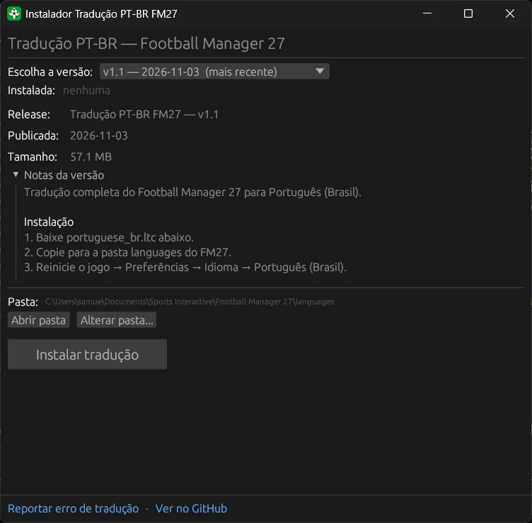

FM27 Translator Installer
Instala a tradução PT-BR do Football Manager 27 com um clique, nas versões Steam e Epic, num único .exe que só fala com o GitHub.Installs the Brazilian Portuguese translation of Football Manager 27 in one click, on Steam and Epic, in a single .exe that only talks to GitHub.
0

O que fazWhat it does
- Escolha a versão: todas as releases da tradução, da mais nova para a mais antiga, com a última estável marcada e as pré-releases sinalizadas.
- Version picker: every release of the translation, newest first, with the latest stable one marked and pre-releases flagged.
- Versão instalada com aviso de atualização disponível e as notas da versão escolhida, direto do GitHub.
- Installed version with an update available hint, and the release notes of the chosen version, straight from GitHub.
- Instalar com barra de progresso: o arquivo é baixado com nome temporário e só depois trocado, então um download interrompido nunca quebra a tradução que já estava instalada.
- Install with a progress bar: the file downloads under a temporary name and is swapped in afterwards, so an interrupted download never breaks the translation already installed.
- Desinstalar com confirmação, abrir a pasta
languagese trocar a pasta do jogo à mão, que fica salva. - Uninstall with confirmation, open the
languagesfolder and change the game folder by hand, which is remembered. - Aviso de jogo aberto: confere a cada 2 segundos se o FM27 está rodando, já que o jogo só carrega traduções ao iniciar.
- Game running warning: checks every 2 seconds whether FM27 is open, since the game only loads translations on start.
- Ícone próprio, sem janela de console e com o runtime de C embutido, então roda num Windows recém-instalado.
- Its own icon, no console window and the C runtime built in, so it runs on a clean Windows install.
Como funcionaHow it works
Um app em Rust com interface em egui: lê a lista de releases da tradução pela API do GitHub, baixa o portuguese_br.ltc da versão escolhida e coloca na pasta Documents\Sports Interactive\Football Manager 27\languages, que é a mesma na Steam e na Epic. A pasta Documentos vem do Windows, então funciona mesmo movida para o OneDrive.A Rust app with an egui interface: it reads the translation's release list from the GitHub API, downloads portuguese_br.ltc from the chosen version and drops it into Documents\Sports Interactive\Football Manager 27\languages, the same on Steam and Epic. The Documents folder comes from Windows, so it works even when moved to OneDrive.
languages. A tradução é da comunidade, em arthurabreu/fm27-ptbr-release.It only talks to GitHub. The app does not touch the game's executables or files: it only drops the translation file into the languages folder. The translation is made by the community, at arthurabreu/fm27-ptbr-release.Como compilarBuild it
git clone https://github.com/SamuelSchutz13/FM27-Translator-Installer.git cd FM27-Translator-Installer cargo run --release